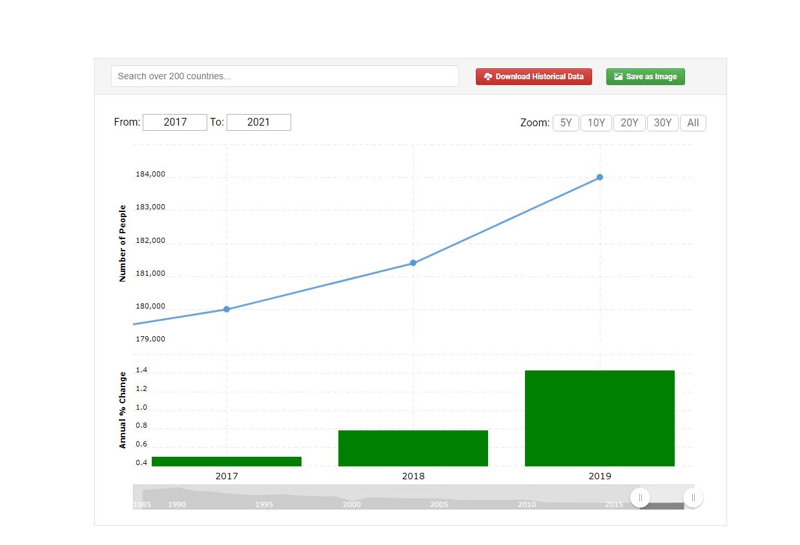

The German military ad "Alles Wird - Alles Hier" which translates to "Everything Becomes - Everything Here". This ad campaign was launched by the German military in 2019, aimed at promoting a sense of community and belonging among military personnel. The ad shows scenes of soldiers participating in various activities, such as training exercises and humanitarian missions, accompanied by a voiceover that emphasizes the sense of unity and purpose that comes with military service. The slogan "Alles Wird - Alles Hier" is intended to convey the idea that everything that one needs to succeed and make a meaningful contribution can be found within the military community. In terms of Hofstede's cultural analysis, Germany is generally considered to be a culture with a relatively high level of uncertainty avoidance and a relatively low level of individualism. The "Alles Wird - Alles Hier" campaign speaks to these cultural values by emphasizing the importance of community and the benefits of belonging to a stable, structured organization like the military. By emphasizing the sense of belonging and shared purpose that comes with military service, the ad seeks to appeal to those who value stability, structure, and a sense of community. (Hofstede Insights 2023)
The success of the "Alles Wird - Alles Hier" campaign by the German military can be attributed to several factors. Firstly, the campaign tapped into the cultural values of Germany, which tend to emphasize community and teamwork over individualism. This messaging was especially effective in the wake of increased immigration and the rise of right-wing populism, which has led many Germans to seek a sense of belonging and shared purpose. The ad's emphasis on a strong and united military community offered a powerful and appealing message to potential recruits. In comparison, the "What's Your Warrior?" campaign launched by the United States Army emphasized individual strengths and interests, appealing to a more individualistic culture in the United States. However, this message may not have resonated with potential recruits as well as the sense of community and belonging emphasized in the "Alles Wird - Alles Hier" campaign. The decline in Army personnel in recent years suggests that the personalized messaging of the "What's Your Warrior?" campaign may not have been as effective in recruiting and retaining new personnel. Overall, the success of the "Alles Wird - Alles Hier" campaign highlights the importance of understanding cultural values and tailoring advertising messages accordingly. By tapping into the cultural values of Germany and emphasizing the sense of community and belonging that comes with military service, the ad was able to effectively recruit and retain new personnel for the German military.(Macrotrends 2023)